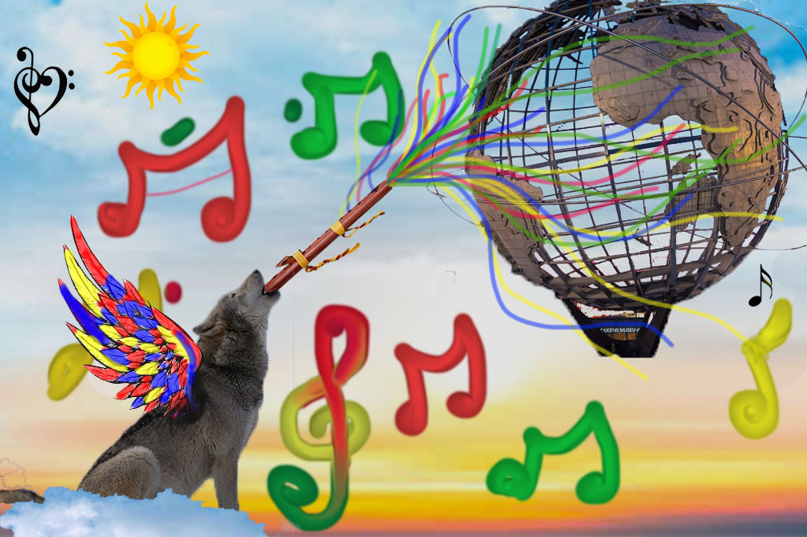

Vegetables thenthuk is a common modern option. Wolf has the ability to quickly and firmly adapt to emotions and often has to trust his instincts. Queens is the most populated city zone in the world that is ethnically diverse Kalsang arrives at different artists and communities to collaborate on creative projects and healing skills. A musician playing flute can be called a flutist, flutist, flutist.
